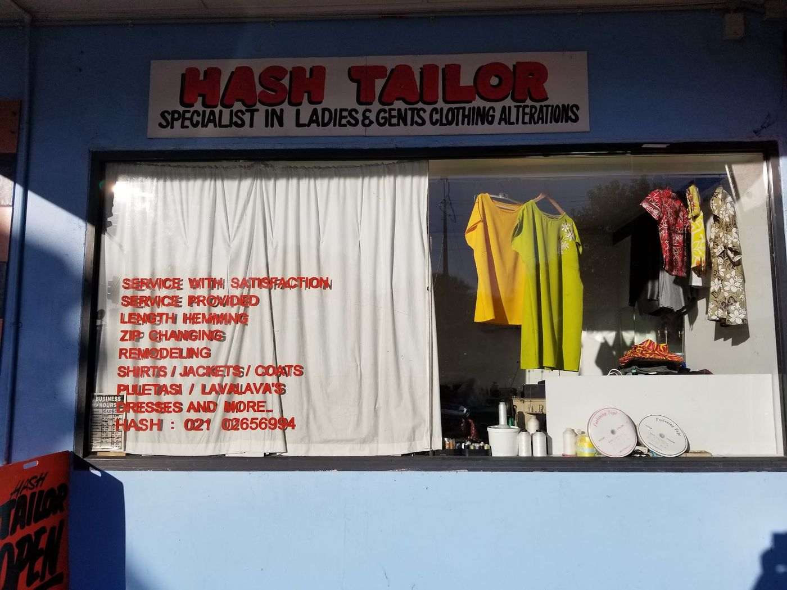
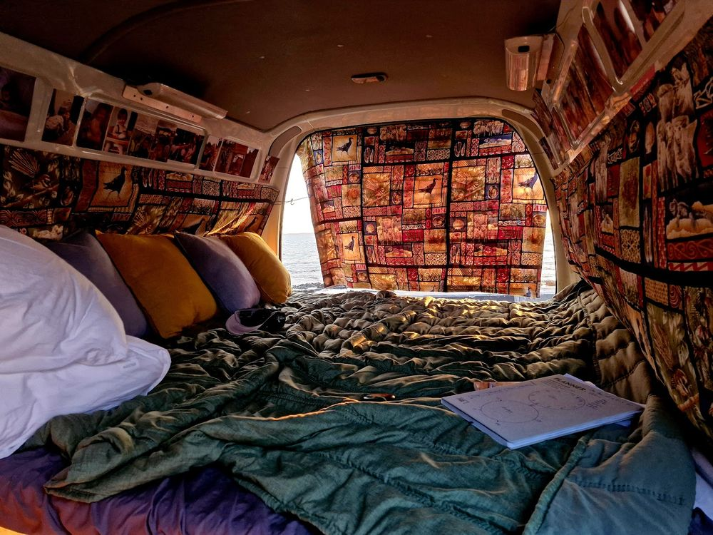
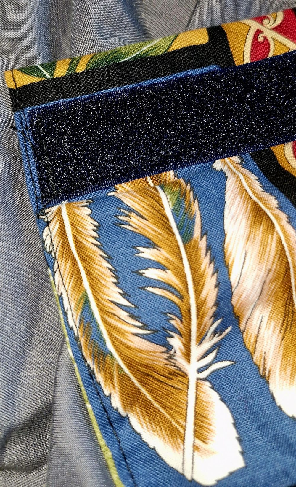
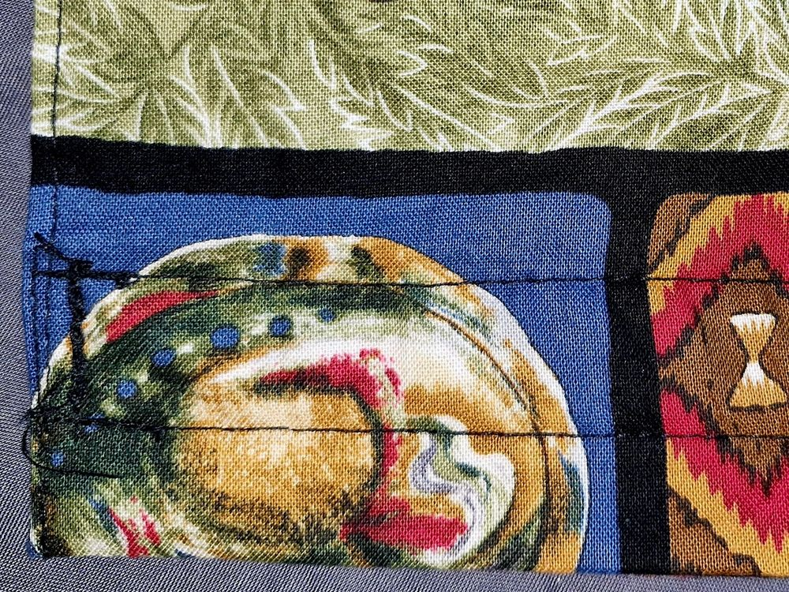
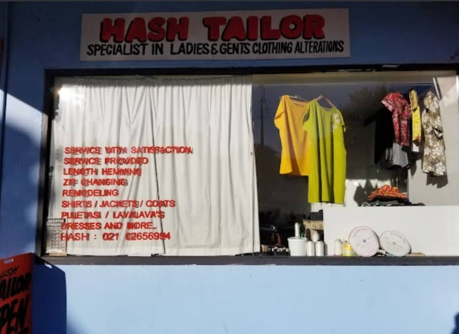
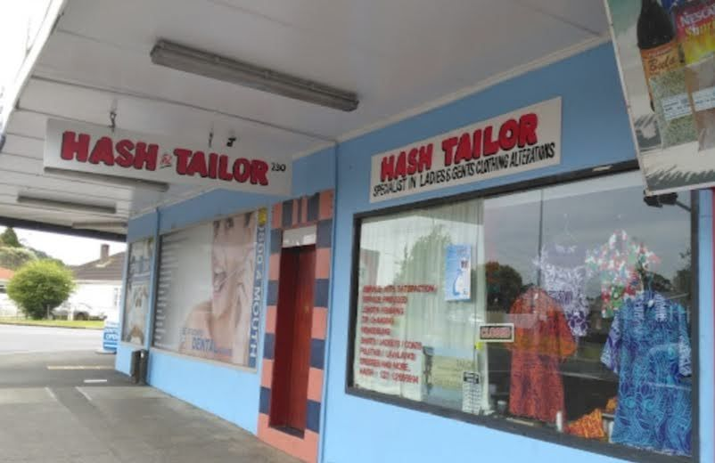

Length hemming
Trousers, jeans, skirts and dresses taken up or let down to the right length.
Tailor on Richardson Road, Wesley
Hems, zips, resizing and remodelling for ladies' and gents' clothing. Drop it in to Hash on Richardson Road, or call first to check.

What Hash does
Trousers, jeans, skirts and dresses taken up or let down to the right length.
Broken or stuck zips replaced on trousers, jackets, skirts and dresses.
Taking in, letting out and reshaping a garment so it fits the way it should.
Sleeves, sides and shoulders adjusted on everyday and formal wear.
Pacific wear altered and fitted for you.
Ball and formal dresses fitted, plus repairs and one-off jobs like curtains.
How it works
Drop in during opening hours, or call Hash first to check he can fit you in.
Show Hash what needs doing and he'll measure it up with you.
Collect it finished and fitting right. Small fixes can be quick.
Reviews
What customers say about Hash and his work.
Dropped off my gym leggings and he fixed it not even 30 min after. A very kind and sweet man! Totally recommend it!
Hash Tailor made these curtains for my camper van, he has done a beautiful job, quality workmanship with exact specifications met for a perfect fit, and the material orientation was cut and stitched so that all the graphics face up when the material had them oriented on its side! He worked closely with me to ensure it was all to my liking and would end up as a quality product that will last years! The Velcro is secure and all stitching is beautifully finished. All for a very agreeable price and excellent customer service 👌 👏 Hash Tailor is highly recommended.
10/10 for this place. I went in for a dress alteration and Hash dropped what he was doing to complete this there and then for me. Very speedy service whilst I waited and the dress is perfect. Sat and had a really nice chat with him - a very lovely man too. Thank you Hash for your great skills! Would recommend this place to anyone!
This guy is a bit of a legend. I popped in with two dresses for alterations, left to get cash and when I came back he said if I could wait 10 mins, he'd do it there and then. Very interesting gentleman to speak to, and he did a stellar job on the two dresses. Highly recommend!
Hash Tailors reviews were good so I decided to come here for a dress alteration, fast service he was able to fix it within 2 days. Hash is welcoming and friendly, his service is top notch and his prices are affordable, One of the best tailors I've come across. I'm so glad I came here, Thank you very much Hash I appreciate your hard work. Make sure you come and support this small business you won't be disappointed.
Highly recommend . 5 stars all the stars and many more ! My daughters ball was on the 1st October . Im so last minute that I literally called Hash on the 25th September (Weds) rushed from South Auckland to Central Auckland where he was spent almost an hour with him cause my teen wasnt sure of what she wanted . Anyways he drew a plan of what the dress might look like and she finally agreed . 11:30pm on Thursday night Hash messaged me and said the dress was ready to to go in Friday to do last minute fittings and sewings which she did and we had the dress on Friday . I would totally recommend his services . Tell your friends and your family . Hes fast, efficient and his communication is 100% !!!!
Lovely bloke, good prices, quick service
Thank you so much for the fantastic alteration of my son's trousers. Hash is awesome with lots of experience in his field. He treats his customers with respect, excellent service and affordable price. Definitely will be going there from now on. Highly recommended!
Hash is the goat! Last minute dress needed doing up and he absolutely nailed what I asked for. Amazing service, amazing person, 100% recommended 🥰
Chose this place because of other Google reviews and Hash did not disappoint. The prices were very affordable and the quality delivered is exceptional! Hash himself is very welcoming and friendly. Modest facilities if you want to do a fit-on though. Parking will be on the street, and it could get tight with the time of the day. All in all, this is where I'd be going for all my alterations now.
Hash is always so helpful in finding solutions for alterations and adjustments and following up with doing a good job with the item after that. Highly recommended his services.
Hard to find these kinds of people nowadays. Harsh provides a combination of great customer and excellent tailoring. Couldnt get any better for cutomers. Highly Recommend.
Very professional and gives right advice. I always have an excellent experience and he has never disappointed me in case of urgent alterations. Very punctual about his services. Overall highly recommended.
My jeans were tailored here. Good quality work, affordable and a quick turnaround.
Highly skilled tailor who provides his services at an extremely affordable cost. Also a lovely man too. Highly recommend!
Hash is a very nice man and has done some great work over the years for me 🙏🏻
Very handy to me, friendly, and knows what he's doing. Also very fast.
He s very welcoming, energetic does his job very well.
Awesome man, with loads of experience. Can tell his services are valued by the local community, by the way customers interact with him and vice- versa Will definitely be coming back. Cheers Hash!
Good pricing, good outcome, good person
Excellent service. Very nice and friendly fellow. Did the alterations to the expectations. Recommended.
Excellent service very good price awesome tailor 👍 will be going there from now on thank you HASH TAILOR!!
Very quick and efficient. Thank you
Exellent tailor. I can't fault his work and very helpfull & respect
Fantastic service with a smile.
Hover or tap to pause. Read all 38 on Google
About
Hash Tailor is a small alterations shop on Richardson Road in Wesley, run by Hash himself. He works on everyday clothes, formal wear and Pacific wear for ladies and gents.
Customers keep coming back for the same reasons: careful work, fair prices, quick turnarounds and a friendly welcome. 34 of his 38 Google reviews are five stars.
“Hash is awesome with lots of experience in his field.”Jeanne Bouladam, Google review
“Highly skilled tailor who provides his services at an extremely affordable cost.”Cameron Johnson, Google review
“One of the best tailors I've come across.”Chaye, Google review






Visit the shop
206 Richardson Road, Wesley, Auckland 1041. Look for the blue shopfront with the red sign.
Hold Ctrl and scroll to zoom, or use + and −.
| Monday | Closed |
|---|---|
| Tuesday | 11am – 5:30pm |
| Wednesday | 11am – 5:30pm |
| Thursday | 11am – 5:30pm |
| Friday | 11am – 5:30pm |
| Saturday | 11am – 5pm |
| Sunday | Closed |
Contact
Call or text to check a job, or just drop in during opening hours.